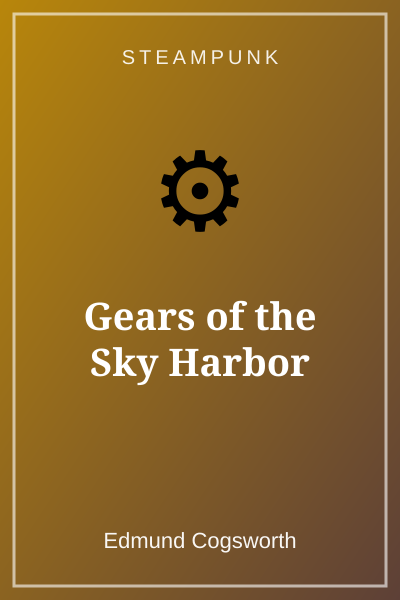
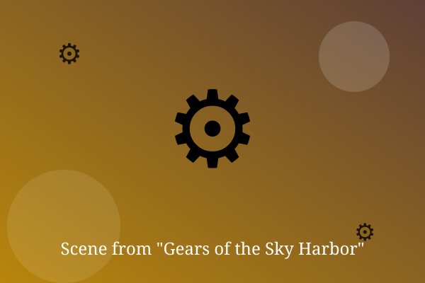

Chapter 1: Brass and Steam

Tilly Brass had four weeks, two broken pipes, and a balloon sewn from old tablecloths. The airship would fly, or she would be in prison.
She hammered, welded, and swore at a stubborn valve until the whole shed hissed with steam.
On the fourth morning, the Sparrow lifted off the ground. Tilly laughed so hard she nearly fell off.
— End of Chapter —